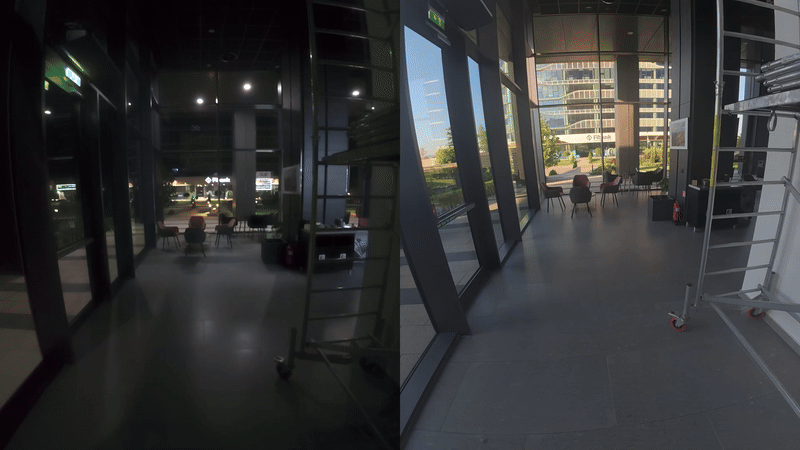

EgoNight
ICLR 2026Can multimodal LLMs see in the dark?多模态大模型能在黑暗中看清吗？
The first benchmark for nighttime egocentric vision. Day–night aligned videos let the same question be asked under both lighting conditions, which improves annotation quality and isolates the effect of darkness. State-of-the-art MLLMs drop significantly from day to night.第一个夜间第一人称视觉 benchmark。昼夜对齐的视频让同一个问题可以在两种光照下提问，既提高了标注质量，也把“黑暗”这一因素单独隔离出来。最强的 MLLM 从白天到夜晚性能显著下降。
3,658 QA pairs3,658 个问答90 videos90 段视频12 question types12 类问题day–night aligned昼夜对齐